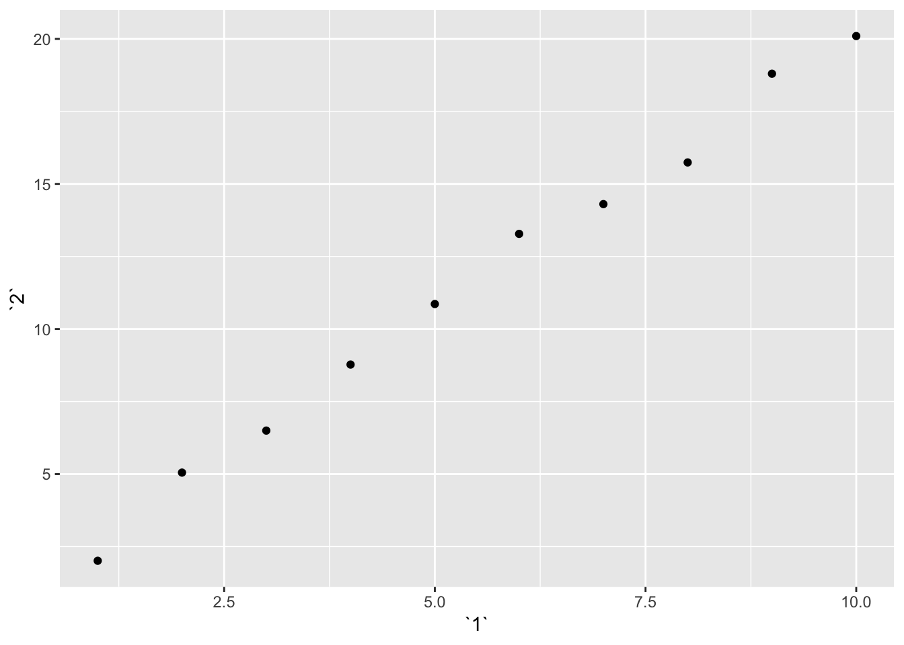

Chapter 10 Tibbles
You can create tibbles from existing data frames using as_tibble(), or create brand new tibbles using tibble():
tibble(
x = 1:5,
y = 1,
z = x ^ 2 + y
)## # A tibble: 5 x 3
## x y z
## <int> <dbl> <dbl>
## 1 1 1 2
## 2 2 1 5
## 3 3 1 10
## 4 4 1 17
## 5 5 1 26A cousin of tibble(), tribble(), can also be used as a way to manually enter data into a tibble format:
tribble(
~x, ~y, ~z,
#--|--|----
"a", 2, 3.6,
"b", 1, 8.5
)## # A tibble: 2 x 3
## x y z
## <chr> <dbl> <dbl>
## 1 a 2 3.6
## 2 b 1 8.5You can also use non-syntactic names for variables in tibbles:
tb <- tibble(
`:)` = "smile",
` ` = "space",
`2000` = "number"
)
tb## # A tibble: 1 x 3
## `:)` ` ` `2000`
## <chr> <chr> <chr>
## 1 smile space numberWhen compared to a data.frame in baseR, the tibble looks more user-friendly. Calling a tibble automatically provides only the beginning chunk of the data rather than filling up your entire console (think if it as default head(data.frame) display). Other nice features include not converting strings to factors or changing variable names.
To convert tables to or from data frames, use as_tibble() and as.data.frame():
class(iris)## [1] "data.frame"class(as_tibble(iris))## [1] "tbl_df" "tbl" "data.frame"class(as.data.frame(as_tibble(iris)))## [1] "data.frame"You can select columns in tibbles the same way you would with a data.frame:
df <- tibble(
x = runif(5),
y = rnorm(5)
)
# extract column 'x' using either $ or [[]]
df$x## [1] 0.02150921 0.74497870 0.85418294 0.47402780 0.39835551df[["x"]]## [1] 0.02150921 0.74497870 0.85418294 0.47402780 0.39835551df[[1]]## [1] 0.02150921 0.74497870 0.85418294 0.47402780 0.3983555110.5 Exercises
1. How can you tell if an object is a tibble? (Hint: try printing mtcars, which is a regular data frame).
You can tell if an object is a tibble because the output you get by calling it will say “tibble”! For example, calling the diamonds tibble returns :# A tibble: 53,940 x 10 as the first line of the output. Also you can tell something is a tibble based on the class specifications underneath each variable name. A tibble will also only print out the first 10 rows by default, whereas a data.frame will print out as many as the console allows. Last, the definitive way to tell something is a tibble is to use the class() function.
class(diamonds)## [1] "tbl_df" "tbl" "data.frame"class(mtcars)## [1] "data.frame"2. Compare and contrast the following operations on a data.frame and equivalent tibble. What is different? Why might the default data frame behaviours cause you frustration?
On a data.frame, df$x will still return the values for column xyz. This behavior does not occur for a tibble, which requires the exact name of the column df$xyz. This data.frame feature might cause frustration if you have columns in your dataset with the same prefix, in which you might fetch the wrong column. The other functions between data.frame and tibble work the same way. One distinction to note is that, when creating the data.frame, “a” is considered a factor with 1 level. When creating the tibble, “a” is not converted into a factor.
df <- data.frame(abc = 1, xyz = "a")
df$x## [1] a
## Levels: adf[, "xyz"]## [1] a
## Levels: adf[, c("abc", "xyz")]## abc xyz
## 1 1 adf <- tibble(abc = 1, xyz = "a")
df$x## Warning: Unknown or uninitialised column: 'x'.## NULLdf[, "xyz"]## # A tibble: 1 x 1
## xyz
## <chr>
## 1 adf[, c("abc", "xyz")]## # A tibble: 1 x 2
## abc xyz
## <dbl> <chr>
## 1 1 a3. If you have the name of a variable stored in an object, e.g. var <- “mpg”, how can you extract the reference variable from a tibble?
If the name of the variable is stored in an object, you can pass the object in lieu of the variable name using [[]] or [] just as you would do so with the explicit variable name. You can even pass the object and another variable name to obtain multiple reference variables using c(). I provide an example below using the diamonds dataset.
var <- "carat"
var2 <- c("carat","price")
# extract only carat
diamonds[,var]## # A tibble: 53,940 x 1
## carat
## <dbl>
## 1 0.23
## 2 0.21
## 3 0.23
## 4 0.290
## 5 0.31
## 6 0.24
## 7 0.24
## 8 0.26
## 9 0.22
## 10 0.23
## # … with 53,930 more rows#extract carat and price
diamonds[,c(var,"price")]## # A tibble: 53,940 x 2
## carat price
## <dbl> <int>
## 1 0.23 326
## 2 0.21 326
## 3 0.23 327
## 4 0.290 334
## 5 0.31 335
## 6 0.24 336
## 7 0.24 336
## 8 0.26 337
## 9 0.22 337
## 10 0.23 338
## # … with 53,930 more rowsdiamonds[,var2]## # A tibble: 53,940 x 2
## carat price
## <dbl> <int>
## 1 0.23 326
## 2 0.21 326
## 3 0.23 327
## 4 0.290 334
## 5 0.31 335
## 6 0.24 336
## 7 0.24 336
## 8 0.26 337
## 9 0.22 337
## 10 0.23 338
## # … with 53,930 more rows4. Practice referring to non-syntactic names in the following data frame by:
annoying <- tibble(
`1` = 1:10,
`2` = `1` * 2 + rnorm(length(`1`))
)- Extracting the variable called 1.
annoying[,"1"]## # A tibble: 10 x 1
## `1`
## <int>
## 1 1
## 2 2
## 3 3
## 4 4
## 5 5
## 6 6
## 7 7
## 8 8
## 9 9
## 10 10- Plotting a scatterplot of 1 vs 2.
ggplot(annoying, aes(`1`,`2`))+
geom_point()
- Creating a new column called 3 which is 2 divided by 1.
annoying %>%
mutate(`3` = `2`/`1`)## # A tibble: 10 x 3
## `1` `2` `3`
## <int> <dbl> <dbl>
## 1 1 2.01 2.01
## 2 2 5.05 2.52
## 3 3 6.50 2.17
## 4 4 8.77 2.19
## 5 5 10.9 2.17
## 6 6 13.3 2.21
## 7 7 14.3 2.04
## 8 8 15.7 1.97
## 9 9 18.8 2.09
## 10 10 20.1 2.01- Renaming the columns to one, two and three.
annoying %>%
mutate(`3` = `2`/`1`) %>%
rename(one = `1`, two = `2`, three = `3` )## # A tibble: 10 x 3
## one two three
## <int> <dbl> <dbl>
## 1 1 2.01 2.01
## 2 2 5.05 2.52
## 3 3 6.50 2.17
## 4 4 8.77 2.19
## 5 5 10.9 2.17
## 6 6 13.3 2.21
## 7 7 14.3 2.04
## 8 8 15.7 1.97
## 9 9 18.8 2.09
## 10 10 20.1 2.015. What does tibble::enframe() do? When might you use it?
Taken from the documentation: “enframe() converts named atomic vectors or lists to two-column data frames. For unnamed vectors, the natural sequence is used as name column.” I might use this when I have a vector that I want to turn into a data.frame for graphing using ggplot, which requires data be in data.frame or tibble.
x = rnorm(100)
names(x) <- c(5:104)
enframe(x)## # A tibble: 100 x 2
## name value
## <chr> <dbl>
## 1 5 -0.270
## 2 6 1.68
## 3 7 -1.53
## 4 8 0.641
## 5 9 -0.546
## 6 10 1.31
## 7 11 -1.78
## 8 12 2.48
## 9 13 0.176
## 10 14 0.804
## # … with 90 more rowsclass(enframe(x))## [1] "tbl_df" "tbl" "data.frame"